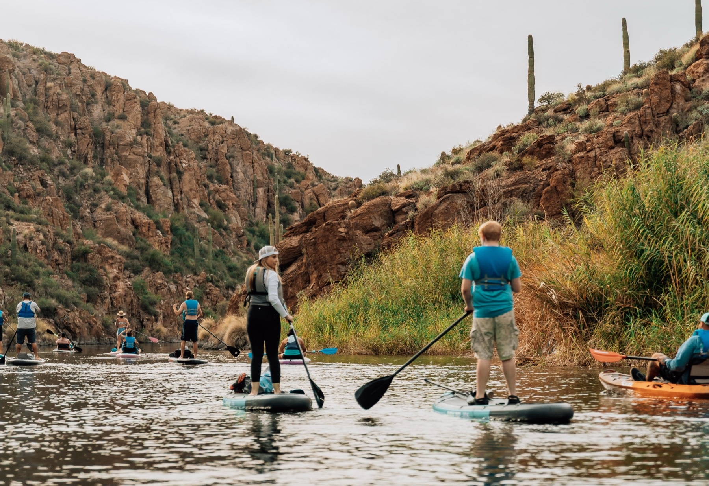

Our Story
Born on the Water
We started Yak N Sup because we believe everyone deserves a great day on the lake. No experience required.
We started Yak N Sup because we believe everyone deserves a great day on the lake. No experience required.

Yak N Sup started with a simple idea — that getting on the water shouldn't be complicated, expensive, or intimidating. We wanted to make kayaking and paddleboarding accessible to everyone, from first-timers to seasoned paddlers.
We set up at Canyon Lake Marina in Arizona, one of the most stunning stretches of water in the Southwest — massive canyon walls, calm water, and scenery that genuinely stops people in their tracks. And now we're bringing that same experience to Hidden Cove in Texas.
We're locally owned, lake-obsessed, and genuinely stoked every time we see someone push off from the dock for the first time. That energy is what Yak N Sup is all about.
Everything we do comes back to these.
We protect the places we play. We keep our lakes clean, operate responsibly, and give back to the communities around us.
Welcoming, laid-back, and genuinely happy to be out there. We want every person who shows up to leave with a smile.
We invest in our equipment so you get a great experience every time. Clean boats, properly fitted PFDs, and gear that works.
We're not a chain. We're a local business built around specific communities and specific lakes that we genuinely love.
First timer, grandparent, corporate team, bachelorette crew — everyone belongs on the water. We make it work for all of them.
We're not just renting boats. We're helping people create memories — first paddles, birthdays, proposals, sunsets. All of it.
Two different lakes, same commitment to making your day on the water unforgettable.
Our original home. Dramatic Superstition Mountain canyon walls, crystal-clear water, and some of the most stunning desert scenery in the country. 45 minutes from Phoenix — totally worth the drive.
Visit Canyon Lake →Our Texas home at Lake Lewisville — calm protected coves perfect for beginners, wide open water for those who want to explore, and easy access from Dallas/Fort Worth. North Texas's best-kept paddling secret.
Visit Hidden Cove →We host full moon paddles, sunset paddles, group adventures, and social events because we believe the water is better when shared. We're building a community of people who love lake life — and we want you in it.
Whether you're a first-timer or a regular, a solo paddler or here with 50 of your closest friends, you belong at Yak N Sup.
See Our ExperiencesBook a rental, join a guided tour, or just show up at the dock. We'll take care of the rest.